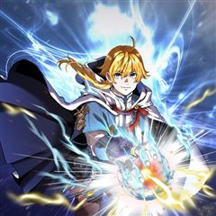
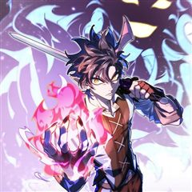
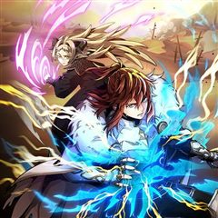

빌어먹을 환생 같은 웹툰 추천

빌어먹을 환생 · 키키 / 박정열 / 목마
빌어먹을 환생 재밌게 봤다면 이 웹툰들도 좋아할 거예요. 같은 장르이면서 환생 같은 요소가 겹치는 작품을, 겹치는 요소가 많은 순서로 20개 골랐어요.
2026-10-10 기준 · 네이버웹툰·카카오웹툰·레진코믹스 · 성인 작품 제외
내 취향으로 직접 골라 추천받기 →-
1
 카카오웹툰
카카오웹툰극락왕생
당산역 귀신 박자언 X 막무가내 지옥의 호법신 도명 윤회의 끝, 극락왕생을 위해 펼치는 퇴마 활극! “들려? 노래 불러. 체리필터의 [낭만 고양이]로…” 비 오는 날이면 합정에서 당산으로 넘어가는 2호선 지하철에 나타나는 ‘당산역 귀신’. 자신이 보…
환생판타지드라마카카오웹툰에서 보기 → -
2
 카카오웹툰
카카오웹툰정령왕 엘퀴네스
우연히 교통사고로 사망한 평범하기 짝이 없던 고등학생 강지훈은 명계에서 자신이‘인간으로 잘못 태어난 물의 정령왕’이라는 사실을 알게 된다. “물의 정령을 만들라니? 어떻게 하는 건데?” 인간으로 잘못 태어났던 물의 정령왕 엘퀴네스의 좌충우돌 모험기!
환생판타지드라마카카오웹툰에서 보기 → -
3
 카카오웹툰
카카오웹툰칠흑이 삼킨 여름
할머니가 돌아가신 후, 도시에서의 생활을 정리하고 고향에 돌아온 ‘나수현’. 수현은 뭔가에 이끌리듯, 할머니가 살아생전 절대 오르지 마라 했던 ‘오봉산’에 오른다. 산속에서 길을 잃고 기이한 일에 휘말려 위험에 처한 찰나, 수현은 목이 잘려도 멀쩡한…
환생판타지드라마카카오웹툰에서 보기 → -
4
 카카오웹툰
카카오웹툰변경백 서자는 황제였다
바리엘 제국의 마법사이자 어린 나이에 황제가 된 이안은 조카의 반란으로 감옥에 갇힌다. 이안을 구해주러 온 마법사 나움은 금지된 시공간 마법을 사용한다. 금지된 마법은 황제 이안을 과거 100년으로 이끌고 100년 전 멸문한 변경백 가문의 서자 이안…
환생판타지드라마카카오웹툰에서 보기 → -
5
 카카오웹툰
카카오웹툰환생자의 스트리밍
“십 년간 오늘만을 준비했어. 그러니까 네가 이해해라.” 최강의 플레이어라 불리던 이수혁. 그러나 믿었던 친구의 배신으로 길드원들을 지키다 처참한 죽음을 맞는다. ···눈을 뜬 순간, 그는 무려 20년 후의 세상에 돌아와 있었다. 세상은 그의 죽음을…
환생판타지드라마카카오웹툰에서 보기 → -
6
 카카오웹툰
카카오웹툰용사파티 대마법사의 환생
천재마법사 린은 13살 때, 세상을 혼돈에 빠뜨리려는 거악 ‘심연’을 물리치고자 리스타를 위시한 용사파티와 함께 여행을 떠난다. 하지만 싸움은 점점 격렬해지고 마지막 순간에 린의 몸은 ‘심연’의 암독에 당해서 생명이 위태로워진다. “다시 돌아올게”라…
환생판타지드라마카카오웹툰에서 보기 → -
7
 카카오웹툰
카카오웹툰갑질하는 영주님
외계인의 침공으로 황폐화된 지구, 민병대를 이끌던 ‘박현성’은 처절한 항전 끝에 외계인을 위기로 몰아넣는데 성공한다. 워프로 도망가는 외계인과 함께 산화하려는 마지막 순간. 워프에 휘말려 정신을 잃고 만다. 눈을 뜨니 거울 속에 비치는 모습은 민병대…
환생판타지드라마카카오웹툰에서 보기 → -
8

카카오웹툰골든메이지
평생 부모님의 빚을 갚으며 살다 불의의 사고로 죽게 된 진성. ‘이렇게 평생 돈도 가족도 없이 외롭게 죽는 건 억울해!’ 그러나 눈을 떠보니 처음 보는 곳에서 엘이 되어 살게된다. 이번 생에 갖게 된 가족을 지키기 위해 엘은 힘과 돈이 필요하다. ‘…
환생판타지드라마카카오웹툰에서 보기 → -
9

카카오웹툰최강 던전을 위하여
불의의 사고로 목숨을 잃고 어느 이세계의 대마왕에 아들로 환생한 강치우! 유명 맵 제작자였던 전생과 달리, 이곳에선 켈라라는 이름의 찌질이 마족이 되어버렸다. 하지만 마법이 실존하는 이세계와 켈라의 잠재력을 깨우친 치우는 이전 세계에서 이루지 못했던…
환생판타지드라마카카오웹툰에서 보기 → -
10
 카카오웹툰
카카오웹툰검공가에 환생한 검제
오직 무인으로서 강해지는 것만을 추구하는, 옛 시대에서나 찾아볼 법한 구도자였던 존재, 검제. 당대의 천하제일인이었던 천마와 삶의 마지막을 장식할 비무 후, 대륙 최강의 검가 카르데나스 가문의 핏줄로 깨어나다!
환생판타지드라마카카오웹툰에서 보기 → -
11
 레진코믹스
레진코믹스불사의 저주
17세기 러시아의 봉건귀족의 최상층 보야르인 겐나디와 마녀 사이에서 태어난 아이, 지나이다 이곳은 아이가 태어나면 축복을 빌어준다. 지나이다 또한 자신의 아버지이 겐나디에게 영생을 살 수 있는 축복 아닌 저주를 받던 날, 묘연하게 자취를 감춘 그녀의…
환생판타지드라마레진코믹스에서 보기 → -
12
 네이버웹툰
네이버웹툰66666년 만에 환생한 흑마법사
강대했던 흑마법사 디아블로 볼피르. 12신의 계략에 당해 억겁 속에 봉인되었지만, 그로부터 66666년이 흘러 다시금 이 땅에 강림한다! "응애!" 웰턴 백작의 갓 태어난 장남으로. 딥다크 매직 판타지 시작!
환생판타지네이버웹툰에서 보기 → · 66666년 만에 환생한 흑마법사 같은 웹툰 → -
13
 카카오웹툰
카카오웹툰4000년 만에 귀환한 대마도사
웨스트로드 아카데미의 열등생, 블레이크 가문의 수치. 괴로운 삶을 이기지 못해 죽음을 선택한 프레이 블레이크의 몸에 새로운 영혼이 깃든다. “뭐야, 이 몸뚱이는? 하나부터 열까지 손 봐야겠군.” 대마도사 루카스 트로우맨. 열등생 프레이 블…
환생판타지카카오웹툰에서 보기 → -
14
 네이버웹툰
네이버웹툰검술명가의 네크로맨서
대륙을 공포로 몰아넣었던 최강의 네크로맨서 아키몬드. 그는 영웅 베르켈 라인란트의 검에 목숨을 잃는다. 그리고 200년 후, 어느 가문의 아기로 태어나 첫 마디를 뱉는다. “어둠의 문지기와 하수인 그리고 병사들이여, 내 명을 받들라!“
환생판타지네이버웹툰에서 보기 → -
15카카오웹툰
전투종족으로 환생한 나의 공무원 생활기
이세계 최강 전투종족으로 환생해 버린 안전 제일주의 공시생. 하지만 이대로 포기할 순 없지. 내 공무원 생활은 이곳에서 시작이다!
환생판타지카카오웹툰에서 보기 → -
16
 카카오웹툰
카카오웹툰성자는 개뿔, 현대의학의 힘이다
천재 의사로 의학계에 힘을 떨치던 유성. 수술실을 집처럼 여기던 그는 어느 날 교통사고로 죽게 되고. 정신을 차려보니 다른 세계로 떨어져 버렸다. 그런데 성녀... 성국... 힐링 마법이라고? "내가 얼마나 힘들게 의학을 배웠는데, 손만 대 놓고 치…
환생판타지카카오웹툰에서 보기 → -
17카카오웹툰
전설급 영웅은 아카데미 우등생
재앙의 시대, 태초의 악 에레보스를 무찌른 카일은 5000년 후 전생의 기억을 가진 채 레오로 환생한다. 하지만, 영웅의 기록을 보관하는 ‘히어로 레코드’ 어디에도 카일의 기록은 찾을 수 없었고 현대의 사람들은 그를 허구의 인물로 취급한다. 이 현실…
환생판타지카카오웹툰에서 보기 → -
18

카카오웹툰끝이 아닌 시작
독보적인 힘과 부를 겸비한 전쟁의 신, 그레이. 그는 여느 때처럼 잠자리에 들었을 뿐인데 눈을 떠보니 각종 마법과 괴물들이 가득한 새로운 세계에서 깨어나게 되고, 이내 자신이 '아서'라는 이름의 아기로 환생해버렸다는 사실을 깨닫게 된다. 전생의 죽음…
환생판타지카카오웹툰에서 보기 → -
19
 네이버웹툰
네이버웹툰마탑의 문제아들
백탑의 마탑주 오스카 세이지와 백탑의 마법사들. 인류의 미래를 위해 목숨을 비롯한 모든 것을 바쳤다. 그로부터 20년 후. 오스카 세이지가 다시 눈을 떴을 때, 창문에 비친 건 기초 마법밖에 쓰지 못하는 1레벨 마법사. 그리고 4대 마탑 퇴출 위기를…
환생판타지네이버웹툰에서 보기 → -
20
 네이버웹툰
네이버웹툰살아생전
사람이 죽으면 저승사자가 찾아와 이름을 세번 부른다. 마중 나온 저승사자 와 망자가 삼도냇가에 이르면 의령수라는 아주 큰 나무가 있는데, 그 밑에 작은 식당 '살아생전'이 있다. 망자가 생전에 가장 먹고 싶었던 음식과 그곳 으로 안내하는 저승사자 '…
환생드라마네이버웹툰에서 보기 →